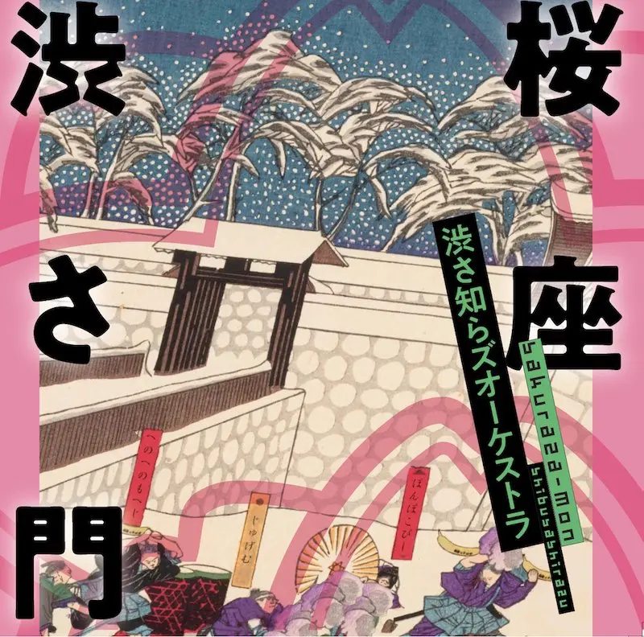

Album#23
桜座 渋さ門
{kind=link}

专辑信息
- 专辑名称：桜座 渋さ門
- 歌手：渋さ知らズ
- 年份：2025-03-23
- 风格：爵士、器乐
- 时长：约 65 分钟
《桜座 渋さ門》是一张器乐非常丰富的爵士器乐专辑，在 2025 豆瓣年度音乐榜单 的「最受关注爵士 Blues 专辑」部分发现的，评分还挺高。
整体听下来，感觉演奏比较即兴，而且有大量的乐器，同一个乐句，可能同时有好几个乐器在演奏，就像在听一场现场的爵士即兴表演。曲子短的七八分钟，长的近十六分钟，戴上耳机，享受他们的演奏就好了。
专辑中即兴的感觉，让我想到了 《蓝色巨星》，里面主角也是一个萨克斯手，即兴起来的那种投入，会吸引在场的所有人。
专辑的封面有点浮世绘的感觉，粉色的线条描绘的大概是樱花的形状吧。
渋さ知らズ起名字也蛮有意思的，乐队名字和专辑名字里都会有「渋」这个字，像是「渋吼」、「渋樹」、「渋夜旅」、「渋響」、「渋星」……他们是真的很喜欢这个字。
关于乐队
渋さ知らズ（しぶさしらズ）是以不破大輔1为核心的日本大乐团。简称「渋さ」。
1989 年结成。从初期起就倾向于 大型乐队编制 ，并随行有舞者团队。以代代木为中心频繁进行演出活动，吸引了众多爵士音乐家等进出。
[…]
由于核心人物不破大輔同时也是一名爵士贝斯手，「渋さ」常被归类为爵士乐队。然而，管乐部分包含了 前卫音乐 的处理方式和 チンドン 演奏。此外，吉他和键盘等乐器也带有摇滚元素。更有甚者，舞者们拥有夜总会舞者、暗黑舞踏家、桑巴舞者等各种背景。
「渋さ」的乐曲大多为器乐曲，基本结构多为简单的乐句在不断增加音压的过程中进行漫长的重复，但也有许多乐效混乱到让人无法理解在演奏什么的曲目。此外，曲名中有很多既独特又莫名其妙的。其旋律线大多简单到可以随口哼唱，与观众的大合唱（没有歌词的曲目则用「啦啦啦」演唱）是现场演出的一大高潮。这种乐曲构成深受与不破大辅交好的萨克斯手篠田昌已所说的「齐奏是很深奥的」（「ユニゾンは深いんだよ」）这句话的影响。
专辑里我比较喜欢的是「If I Must Die」、「Dust Song」、「A song for One ～犬姫のテーマ」。
- 本多工務店のテーマ
- 这首的主旋律像是电影插曲，例如 《飞驰人生》 里主角在改装赛车、不断训练提升的过程中，这段旋律感觉挺合适的。
- direct call
- 比较即兴的一首，听着挺爽。
- If I Must Die
- 相对舒缓的一首，喜欢里面的乐句，有的乐句会在多个乐器之间呼应，好听。
- 火男
- 这首像是在游乐场里。
- Dust Song
- 也是相对舒缓的一首，感觉适合当演出的结束曲。
- hansolo
- 这首感觉像是乐器在吵架，你一句我一句的。
- A song for One ～犬姫のテーマ
专辑中唯一一首有人声的曲子，好听。
南に向かって 2
まっすぐ伸びている
白い砂浜に
君がつけた足跡は
どこに続いているのだろう
僕は君に
遠い旅を
している
もうずっと
ららら…
耳をかすめる波音は
ふたりで聴いたメロディ
もうずっと前に
僕が作った
君のためのメロディ
海は広く
空は高く
風が歌う
響き